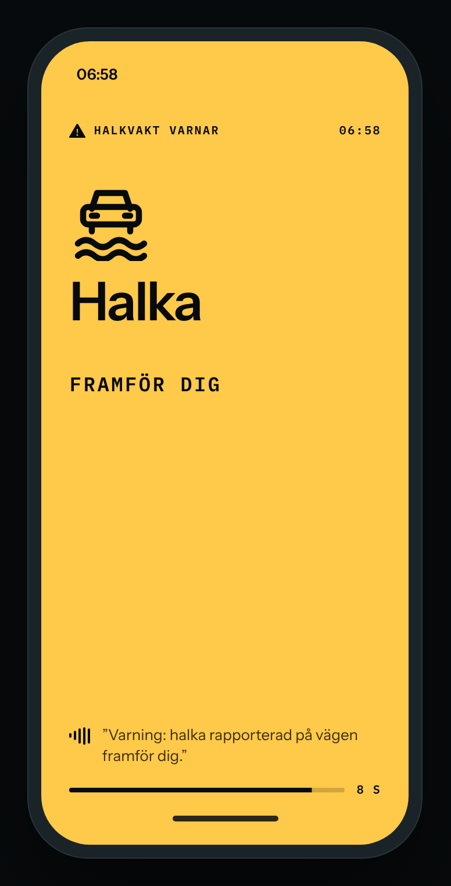
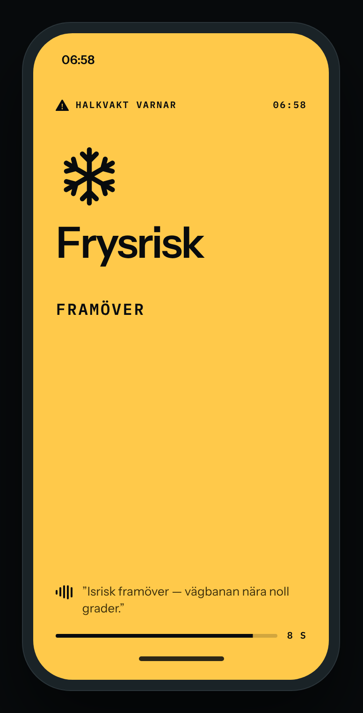
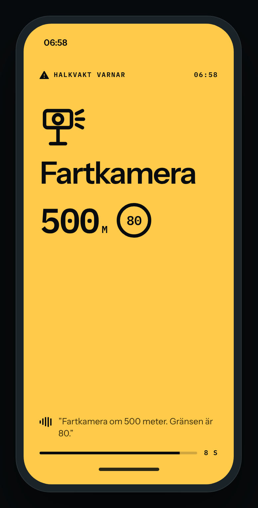
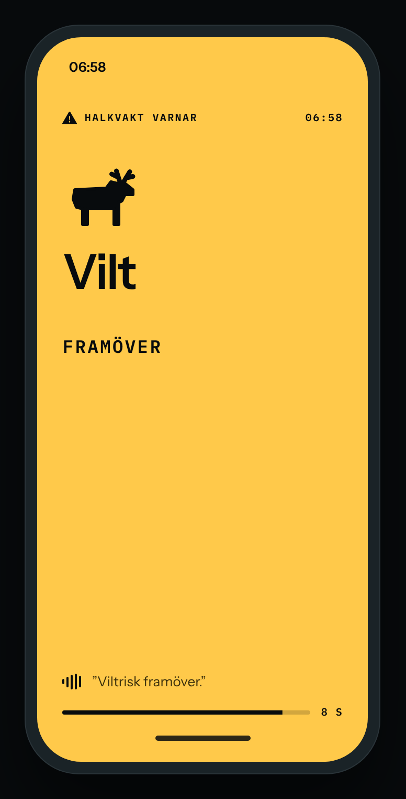
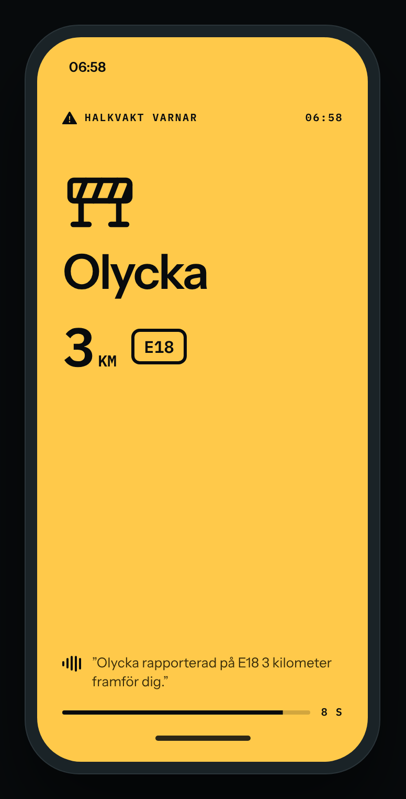

Press
Material och siffror som får användas fritt
Halkvakt är en gratis app som säger till med rösten när det är halt på vägen framför dig. Den läser Trafikverkets vägväderstationer och rapporterade väglag och varnar ungefär 30 sekunder innan föraren är där. Halkvakt finns i App Store för iPhone sedan 13 oktober 2026. Android-versionen kommer i vinter.
Läget på vägarna just nu
| Sträckor med besvärligt väglag | – |
|---|---|
| Vägväderstationer på 0 °C eller kallare | – |
| Pågående olyckor och hinder | – |
| Viltolyckor senaste veckan | – |
Siffrorna uppdateras var 30:e minut och får citeras med källan ”Halkvakt / Trafikverkets öppna data”.
Läget per län
Varje län har en egen sida med Trafikverkets rapporterade halka, vägbanans temperatur vid mätstationerna och pågående olyckor: halkvakt.se/lan. På livekartan väljer man län i panelen eller öppnar det direkt, till exempel karta.html?lan=dalarna. Allt uppdateras var 30:e minut.
Län med halka eller vägbana under noll just nu hämtas …
Snabbfakta
| Vad | Röstvarningar i bilen för halka, frysrisk, olyckor och hinder, vilt och fartkameror |
|---|---|
| Pris | Gratis, inget konto, ingen reklam |
| Finns | iPhone, App Store sedan 13 oktober 2026. Android i vinter |
| Data | Trafikverkets öppna data, uppdaterad var 30:e minut |
| Webb | Livekartan, läget per län (halkvakt.se/lan) och ett inbäddningskort för redaktioner, alla gratis att använda |
| Integritet | Jämförelsen sker i telefonen. Positionen lämnar inte telefonen av sig själv |
| Handhavande | Vaknar själv när man börjar köra, eller med ”Hej Siri, starta Halkvakt”. Inget att trycka på under körning |
Så beskriver vi Halkvakt
Texten får användas fritt i redaktionella sammanhang.
För redaktioner: bädda in läget i ert län
Ett litet kort som visar väglaget i ett län just nu: halka enligt Trafikverket, vägväderstationer med vägbana under noll och den kallaste mätpunkten. Det uppdateras var 30:e minut, dygnet runt, utan att ni behöver göra något. Så här ser det ut:
Klistra in den här koden där kortet ska ligga. Byt varmland mot ert län.
<iframe src="https://halkvakt.se/widget.html?lan=varmland"
width="100%" height="300" style="border:0;max-width:480px"
title="Väglaget i Värmland just nu, Halkvakt" loading="lazy"></iframe>Länsnamn i adressen: stockholm, uppsala, sodermanland, ostergotland, jonkoping, kronoberg, kalmar, gotland, blekinge, skane, halland, vastra-gotaland, varmland, orebro, vastmanland, dalarna, gavleborg, vasternorrland, jamtland, vasterbotten, norrbotten. Vägar: ?vag=e4, e6, e18, e20, e22, rv40. Utan parameter visas hela landet.
Kortet finns i mörkt och ljust. Lägg till &tema=ljus i adressen för en vit variant som passar en ljus artikel, eller &tema=auto för att följa läsarens inställning för mörkt eller ljust läge.
Kortet får bäddas in fritt i redaktionella sammanhang. Siffrorna kommer från Trafikverkets öppna data och får citeras med källan ”Halkvakt / Trafikverkets öppna data”. Rådata finns på data/lan.json. Läget per län i text finns på halkvakt.se/lan. Kortets kod är öppen under Apache 2.0; rättighetshavare är Axel Lagerlöf och Bengt Lagerlöf.
Bilder och logotyp
Bilderna får användas fritt i redaktionella sammanhang med källan Halkvakt. Klicka för full storlek.


Varningskortet Halka

Frysrisk

Fartkamera

Vilt

Olycka


Logotyp, PNG 512 px · Logotyp, SVG · Delningsbild, 1200 × 630


Varningskorten visar appens riktiga rösttexter. Kartbilderna är ögonblicksbilder från 16 oktober 2026; egna skärmbilder från livekartan får användas fritt med källangivelse.
Presskontakt
Mejla hej@halkvakt.se.